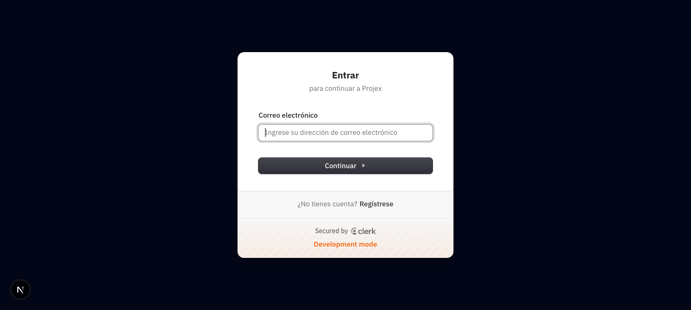
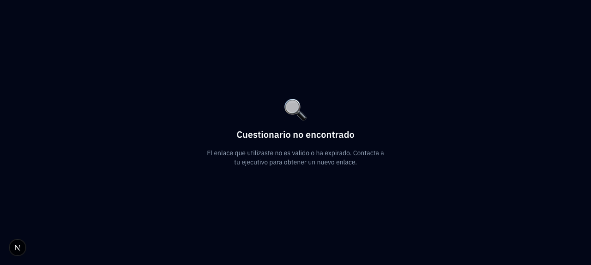

Projex — Guía de Uso
Cómo usar el sistema desde el navegador, pantalla por pantalla. Para la parte técnica (código, schema, AI pipeline), consulta sistema-guia.html.
Lee esto primero. Projex es tu centro de operaciones. Desde aquí administras los clientes de tu firma de consultoría, proyectas cuánto les cobrarás al año, les mandas cuestionarios, generas cotizaciones y contratos, y entregas documentos profesionales mes con mes. Todo el ciclo comercial en un solo lugar.
Qué es Projex
Projex es un sistema multi-tenant: cada firma de consultoría tiene su propia "organización" aislada. Los clientes, proyecciones y documentos de una firma no son visibles por otras.
El flujo típico que recorrerás cada cierre de año (o al cerrar un nuevo cliente):
- Das de alta al cliente con su RFC y datos fiscales.
- Creas una proyección anual decidiendo cuánto te pagará por cada servicio.
- Generas el cuestionario y compartes el link con el cliente.
- Generas cotización → cuando el cliente aprueba, generas contrato.
- Mes a mes, Projex te sugiere qué entregables producir; Claude los pre-llena y tú los apruebas.
Roles de usuario
| Rol | Qué puede hacer |
|---|---|
| Super Admin | Gestiona todas las organizaciones, plantillas globales, servicios default. Verás el botón Panel Plataforma en el menú. |
| Admin | Administra su propia firma: branding, configuración del motor de cálculo, usuarios. |
| Ejecutivo | Opera día a día: da de alta clientes, hace proyecciones, envía cuestionarios, entrega documentos. |
El menú lateral
Siempre visible a la izquierda. Estos son los accesos rápidos a cada sección del sistema:
| Icono | Sección | Qué encuentras ahí |
|---|---|---|
| 🏠 | Dashboard | Panorama general: ventas proyectadas, entregables del mes, clientes activos, alertas |
| 👥 | Clientes | Listado y alta de tus clientes finales |
| 📈 | Proyecciones | Matrices anuales por cliente con servicios y montos mensuales |
| 💼 | Servicios | Catálogo de áreas de servicio (Legal, Contable, TI, etc.) |
| 📋 | Cuestionarios | Cuestionarios enviados a clientes, status y respuestas |
| 📄 | Cotizaciones | Propuestas comerciales por cada servicio proyectado |
| ✍️ | Contratos | Contratos firmados de cotizaciones aprobadas |
| 📦 | Entregables | Documentos mensuales generados con AI |
| 💰 | Facturación | Status de pago de las asignaciones mensuales |
| ⚙️ | Configuración | Placeholder hoy Planeado para equipo + plan |
| 🛡️ | Panel Plataforma | Solo super admin. Gestión global. |
Tip: el menú se puede colapsar con la flecha superior izquierda para ganar más espacio horizontal (útil en la matriz de proyección).
1 Iniciar sesión
La primera pantalla que ves. Ingresas con tu correo y Clerk maneja el resto (verificación, OAuth, etc.).

/sign-in — Correo electrónico + botón Continuar.Abre http://localhost:3000/sign-in
Te recibe el modal de Clerk con el título "Entrar · para continuar a Projex". En dev mode verás la etiqueta Development mode al pie.
Ingresa tu correo electrónico
Click en el campo "Ingrese su dirección de correo electrónico". Clic en Continuar.
Verificación
Clerk te manda un código por email (o password si lo tienes configurado). Lo ingresas y entras.
Selector de organización (si tienes varias)
Si perteneces a más de una firma, Clerk te pregunta en cuál quieres entrar. Elige una.
2 Dashboard — el panorama
Es lo primero que ves después de entrar. Resume toda tu operación del año en una sola vista.
Qué ves en el Dashboard
bash scripts/capture-ui.sh después de iniciar sesión
Qué puedes hacer desde aquí
| Acción | Dónde está | Qué hace |
|---|---|---|
| Cambiar de año | Selector arriba a la derecha | Todo el dashboard recalcula para el año seleccionado |
| Exportar CSV | Botón Exportar CSV | Descarga un resumen financiero + lista de clientes |
| Ver vencidos | Badge rojo bajo card "Entregables Pendientes" | Indica cuántos entregables están vencidos del mes |
3 Crear un cliente
Todo empieza por dar de alta al cliente. Sin cliente no hay proyección; sin proyección no hay nada más.
Paso 1: ir al listado de clientes
Clientes 12
Paso 2: llenar el formulario de nuevo cliente
Click en + Nuevo Cliente
Te lleva a /clientes/nuevo.
Llena los 5 campos
- Nombre / Razón Social — ej. "Empresa Demo S.A. de C.V."
- RFC — se valida con expresión regular mexicana (persona física 13 chars, moral 12)
- Industria — dropdown con lista predefinida (Manufactura, Comercio, Servicios, Tecnología, etc.)
- Facturación Anual Proyectada (MXN) — número. Servirá como default para las ventas anuales de la proyección.
- Frecuencia de Facturación — Semanal / Quincenal / Mensual
Nota: el campo de ejecutivo asignado aún no existe en el formulario (sprint v2).
Click en Crear Cliente
Se crea y te redirige a /clientes/[id] (el detalle del cliente que acabas de crear).
{rfc}@placeholder.com. Está en el plan del sprint v2.
La pantalla de detalle del cliente
4 Crear una proyección
La proyección es el corazón. Define cuánto te pagará el cliente al año y cómo se distribuye ese dinero entre las áreas de servicio (Legal, Contable, TI, etc.).
La UI es un wizard de 4 pasos:
Paso 1 · Datos Básicos
Cliente
Dropdown con todos tus clientes activos. Si viniste desde la pantalla del cliente con el botón + Nueva Proyección, ya viene pre-seleccionado.
Año
Por defecto el año actual. Puedes bajar o subir.
Venta Anual Proyectada (MXN)
Cuánto va a facturar el cliente en total este año. Se pre-llena con el annualRevenue del cliente.
Presupuesto Total a Contratar (MXN)
Cuánto te va a pagar el cliente a ti en total por el año. Este es el número clave.
Tasa de Comisión (%)
Porcentaje que se calcula como comisión sobre las ventas. Default: 2%.
Paso 2 · Ventas Mensuales
Aquí decides cómo se distribuyen las ventas anuales del cliente a lo largo de los 12 meses. Esto genera el Factor de Estacionalidad (FE) que el motor usa para distribuir lo que tú cobrarás.
Opción A: Distribución uniforme
Click Distribuir uniformemente → pone ventasAnuales / 12 en cada mes. Usa esto si el cliente no tiene estacionalidad marcada.
Opción B: Estacionalidad manual
Activa el toggle "Usar estacionalidad" y edita mes por mes. Ej: un restaurante podría tener diciembre alto y enero bajo.
Paso 3 · Servicios
Lista las 9 áreas (Legal, Contable, TI, Marketing, RH, Admin, Comisiones, Logística, Construcción). Para cada una:
- Toggle activo/inactivo — si no cobras ese servicio, déjalo inactivo.
- % del budget — slider entre
minPctymaxPctdel servicio. El valor inicial esdefaultPct. El sistema normaliza los pesos: si los % no suman 100 pero todos están activos, se ajustan proporcionalmente.
budgetServicio = remainingBudget × (chosenPct / sumaDePesosActivos)Las comisiones se calculan aparte como % de ventas mensuales (proporcionales).
Paso 4 · Revisión
Te muestra una tabla preview con los montos mensuales por servicio. Si todo se ve bien, click en Crear Proyección.
5 Generar cuestionario Foco
El cuestionario es el primer contacto con el cliente. Le preguntas los datos y documentos que necesitas para producir los entregables mensuales.
Paso 1: desde la pantalla de la proyección
Abre /proyecciones/[id]. En la sección "Documentos del ciclo" verás un botón:
Paso 2: el sistema construye las preguntas automáticamente
Al hacer click en Generar Cuestionario, el backend construye las preguntas basado en los servicios activos de la proyección:
3 preguntas genéricas (siempre presentes)
- "Información general del servicio requerido"
- "Documentos requeridos para este servicio"
- "Observaciones especiales o requerimientos adicionales"
1 pregunta por cada servicio activo
"Detalle específico para el servicio: {nombre del servicio}"
Paso 3: la pantalla del cuestionario generado
https://localhost:3000/q/xk3f9a2b...
Botones y qué hacen
| Botón | Aparece cuando | Qué hace |
|---|---|---|
| ✏️ Editar Respuestas | Status ≠ completado | Puedes llenar las respuestas tú mismo si el cliente te las pasa por otro medio (WhatsApp, email). |
| ✉️ Enviar a Cliente | Status = borrador | Cambia el status a sent. NO envía email automáticamente. Tú copias el link de abajo y lo mandas manualmente. |
| ✓ Marcar Completado | Status = sent o in_progress | Marca el cuestionario como terminado. Dispara email de notificación al ejecutivo (hoy placeholder). |
| 📋 Copiar | Siempre | Copia al clipboard el link público /q/{token} que le mandas al cliente. |
6 Compartir el cuestionario con el cliente
Como el sistema no envía emails automáticos todavía, tú eres responsable de hacer llegar el link al cliente. Opciones:
Copia el link con el botón 📋 Copiar
El link tiene la forma https://tu-dominio.com/q/xk3f9a2b7c4d.... Ese token es único por cuestionario.
Pégalo donde lo usarás
- Email manual (tu Gmail, Outlook): "Hola Juan, te mando el cuestionario para Empresa Demo 2026. Por favor complétalo antes del viernes: [link]"
- WhatsApp: mismo mensaje
- Slack/Teams: si el cliente tiene canal compartido
Click en Enviar a Cliente en Projex
Esto cambia el status de borrador a enviado para que sepas que ya salió (aunque el email real lo hayas mandado tú por otro lado).
7 Cómo lo ve el cliente (vista pública)
Cuando el cliente abre /q/[token] en su navegador, no necesita cuenta ni login. El token es la credencial.

/q/invalid-token — Lo que ve el cliente si el link está mal o ya expiró.Con un token válido, ve esto
Lo que el cliente puede hacer
Responde las preguntas agrupadas por servicio
El cuestionario viene con el branding del consultor (tu logo, tus colores) si lo configuraste en /platform/orgs/[id]/branding.
Guardar Progreso (no envía aún)
Guarda todo lo que ha escrito. El status del cuestionario pasa a in_progress. Puede cerrar la pestaña y volver más tarde con el mismo link.
Enviar Respuestas (envío final)
Marca el cuestionario como completed. Ya no puede editar. Ve una pantalla de "Respuestas enviadas exitosamente".
Math.random(), no tiene expiración y no está firmado. Cualquiera con el link puede responder. Para producción, el sprint v2 lo reemplaza con HMAC + expiresAt.
8 Generar cotización
Las cotizaciones son por cada servicio individual, no anuales agregadas. Si la proyección tiene 5 servicios activos, generarás 5 cotizaciones (una por cada uno).
Paso 1: desde el ciclo documental del cliente
En /clientes/[id]/ciclo verás una pipeline visual con todos los servicios activos. Para cada uno tienes un botón "Generar Cotización".
Paso 2: en el detalle de la cotización
Servicio: Legal
Cliente: Empresa Demo S.A. de C.V.
Importe anual: $240,000
...
El flujo de status
| Status | Quién lo cambia | Cómo |
|---|---|---|
| Borrador | Sistema | Al crear la cotización |
| Enviado | Consultor | Click en Enviar (lo mandaste manualmente por email/WhatsApp) |
| Aprobado | Consultor | Click en Aprobar cuando el cliente dijo "sí" |
| Rechazado | Consultor | Click en Rechazar si el cliente no aceptó |
9 Generar contrato
Solo puedes generar un contrato desde una cotización que esté en status Aprobado. Si no lo está, el botón no aparece.
Desde la cotización aprobada
Verás un nuevo botón + Generar Contrato. Click.
Se crea el contrato en borrador
El sistema usa el mismo motor de templates (busca plantilla específica del servicio → genérica del org → global). El HTML incluye el bloque de firmas estándar.
Editas, generas PDF, mandas al cliente
Mismo flujo que cotización. El cliente lo firma por fuera (email, escaneo, o en persona).
Click en ✍️ Firmar
Cuando tienes el documento firmado, tú marcas el status. Esto guarda la fecha de firma.
10 Entregable mensual (con AI)
Esta es la parte más mágica del sistema. Cada mes, por cada servicio activo, hay una monthlyAssignment que representa "toca entregar algo". Tú disparas la generación y Claude hace el trabajo pesado.
De dónde viene
Cuando creaste la proyección, el sistema insertó automáticamente 12 asignaciones mensuales por cada servicio activo. Las ves en:
- Dashboard — el pie chart muestra cuántas están pendientes / entregadas / vencidas.
- /entregables — listado completo filtrable por mes / cliente / status.
- /clientes/[id]/ciclo — vista por cliente del estado del año.
Paso 1: disparar la generación
Paso 2: el pipeline AI trabaja (20-60 segundos)
- El sistema busca la plantilla (deliverable_short + deliverable_long) para el servicio.
- Resuelve las variables no-AI desde la proyección/cliente/servicio.
- Llama a Claude por cada variable marcada como
aien la plantilla. - Guarda el entregable con status de auditoría pending.
- Claude lo audita a sí mismo — si pasa, queda approved; si no, rejected con feedback.
ANTHROPIC_API_KEY no está configurada. Mientras no lo esté, el entregable se llena con "[AI no disponible — configurar API key]" en cada variable. Fix: npx convex env set ANTHROPIC_API_KEY sk-ant-...
Paso 3: revisar el entregable
Durante abril de 2026 se realizaron los siguientes trámites para Empresa Demo S.A. de C.V.:
1. Renovación del registro patronal...
2. Revisión de contratos con proveedores...
Paso 4: entregar al cliente
Revisa ambas versiones
Tabs Resumen (Short) y Completo (Long). Son dos versiones del mismo entregable que Claude generó.
Si no te convence, click en 🤖 Regenerar con AI
Corre el pipeline de nuevo. Útil si la primera generación quedó incompleta o quieres un segundo intento con otros datos del cuestionario.
Genera el PDF con branding
Click en Generar PDF. Puppeteer renderiza con tu logo/colores/fuente.
Click en Marcar como Entregado
Solo disponible si audit status = approved. Esto:
- Setea
deliveredAtal momento actual. - Actualiza la
monthlyAssignmentastatus: delivered. - Envía email al cliente con el entregable (hoy con email placeholder).
11 Ciclo documental del cliente
Una vista integrada por cliente donde ves la pipeline comercial completa por cada servicio activo: proyección → cotización → contrato → entregables. Esto te sirve como chequeo rápido antes de una junta con el cliente y como punto de entrada para generar cotizaciones.
Por cada servicio ves el status de: Proyección, Cotización, Contrato y Entregables. Cuando cotización está Sin crear, aparece el botón + Generar Cotización. Cuando contrato está Sin crear y la cotización está aprobada, el botón + Generar Contrato se habilita (desde el detalle de la cotización).
12 Configuración del ejecutivo
/configuracion muestra un icono y texto "Gestiona tu equipo, plan y preferencias" pero sin funcionalidad. Planeada para un sprint futuro: gestión de equipo, facturación del plan Projex, preferencias personales.
13 Panel de Plataforma (Super Admin)
Solo lo ves si tu publicMetadata.role === "super_admin" en Clerk. Es donde administras el sistema completo.
| Sección | Qué haces |
|---|---|
/platform | Lista de organizaciones (firmas) registradas |
/platform/orgs/new | Crear una nueva org |
/platform/orgs/[id] | Configurar servicios asignados, plan, status |
/platform/orgs/[id]/branding | Logo, colores, fuente, header/footer para PDFs |
/platform/servicios | Catálogo global de las 9 áreas de servicio |
/platform/templates | Plantillas HTML (cotización, contrato, entregable corto/largo, cuestionario) con sistema de variables |
FAQ · Problemas comunes
No puedo generar un cuestionario, el botón está deshabilitado
Probable causa: ya existe un cuestionario para esa proyección (regla dura: máximo uno por proyección). Ve a /cuestionarios y filtra por el cliente.
El entregable se generó pero dice "[AI no disponible]"
Falta la variable ANTHROPIC_API_KEY en Convex. Corre: npx convex env set ANTHROPIC_API_KEY sk-ant-... Luego regenera el entregable.
El cliente dice que le llegó el link pero no puede abrirlo
Verifica que el token del link sea correcto (copia de nuevo desde la pantalla del cuestionario). Si el cliente ya completó el cuestionario, verá "Este cuestionario ya fue completado" — no es un error.
No me llega el email de que el cliente terminó el cuestionario
Dos causas posibles: (a) la variable RESEND_API_KEY no está configurada en Convex, (b) el destinatario está hardcoded como ejecutivo@projex-platform.com. Ambas cosas se arreglan en el sprint v2.
Recalculé una proyección y se perdieron los status de los meses ya pagados
Bug conocido. La función recalculate borra todas las monthlyAssignments y las recrea. Está en la lista de fixes del sprint v2. Mientras tanto: no recalcules proyecciones que tienen meses ya marcados como pagados o entregados.
Capturar pantallas reales del sistema
Tengo screenshots reales de las rutas públicas (/sign-in y /q/[token]). El resto son wireframes HTML que reflejan fielmente el código. Para obtener screenshots reales de las rutas autenticadas:
Levanta el dev server
npm run devAbre Chrome controlado por agent-browser
npx agent-browser open http://localhost:3000/sign-inSe abre una ventana de Chrome. Inicia sesión manualmente ahí con tus credenciales de Clerk.
Corre el script de captura
bash scripts/capture-ui.shEsto captura las 15+ rutas autenticadas y las guarda en docs/screenshots/. El HTML las toma automáticamente porque los paths están pre-cableados.
Refresca esta guía
Abre docs/guia-de-uso.html de nuevo. Los placeholders se convierten en imágenes reales.
scripts/capture-ui.sh cuando cambies UI. Las screenshots se actualizan y el HTML siempre muestra el estado actual.
Cómo actualizar esta guía
Este documento vive en docs/guia-de-uso.html. Cuándo tocarlo:
- Cambias el layout de una pantalla: actualiza el wireframe HTML correspondiente en la sección del paso afectado.
- Agregas una ruta nueva: agrega una sección
h2nueva con numeración, enlace en el TOC lateral, y entrada enscripts/capture-ui.sh. - Cierras un gap del sprint v2: elimina el callout amarillo/rojo correspondiente.
- Actualizas la fecha/commit en la barra
.metaal inicio.
Para regenerar todo desde cero, pide a Claude:
Lee docs/guia-de-uso.html y actualízalo leyendo el código actual de src/app/*.
Mantén los screenshots reales que ya existen en docs/screenshots/.src/app/(dashboard)/*, src/app/q/[token]/page.tsx, src/components/layout/sidebar.tsx. Screenshots reales de sign-in y q/not-found capturadas con agent-browser.